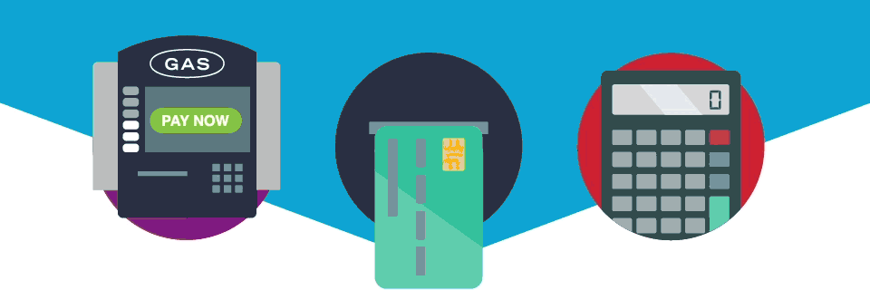

Apresentação

Members Only é um serviço que permite gerir as suas contas bancarias, de forma mais simples e intuitiva, com operações simplificadas pode transferir dinheiro entre utilizadores com apenas um toque no ecrã, através de Members Only tem o seu Banco sempre à mão, disponível para gestão das suas finanças pessoais.
Members Only tem como principal objetivo facilitar a entrada do publico no mercado do dinheiro eletrónico. Este projeto torna possível que todas as pessoas, de todas as idades, possam realizar movimentos bancários apenas com o seu smartphone.
Lista de serviços oferecidos por Members Only:
1. Consultar os últimos movimentos e saldo contabilístico.
2. Efetuar depósitos para a sua conta bancária.
3. Efetuar levantamentos a partir da sua conta bancária.
4. Efetuar transferências entre utilizadores.
5. Realizar donativos para instituições de caridade.
6. Converter o seu dinheiro em diferentes moedas (sem taxa de câmbio).
> Como utilizar Members Only ?
Orientações

Como utilizar Members Only? Utilizar os serviços Members Only é bastante simples, inicialmente o utilizador cria o seu perfil, associando o seu cartão bancário, de seguida escolhe um dos serviços prestados pela aplicação.
1- Caso o serviço selecionado seja “Mudar moeda”, o utilizador irá escolher entre ter o seu saldo contabilístico em dólares($), Euros(€) ou Libras(£).
2- Caso o serviço selecionado seja “Consultar”, o utilizador verá os seus últimos movimentos e o seu saldo contabilístico.
3- Caso o serviço selecionado seja “Depósitos”, o utilizador irá retirar dinheiro da sua conta Members Only para colocar na sua conta bancária.
4- Caso o serviço selecionado seja “Levantamentos”, o utilizador irá retirar dinheiro da sua conta bancária para colocar na sua conta Members Only.
5- Caso o serviço selecionado seja “Transferências”, o utilizador irá transferir o dinheiro da sua conta Members Only para outro utilizador de Members Only.
6- Caso o serviço selecionado seja “Donativos”, o utilizador irá efetuar um donativo, para uma instituição de caridade, a partir do saldo contabilístico da sua conta Members Only.
7- Caso o serviço selecionado seja “Terminar sessão”, o utilizador irá escolher entre editar os seus dados pessoais, eliminar a sua conta ou terminar a sua sessão.
> Video formativo sobre como utilizar Members Only:
Perguntas frequentes
O que é moeda eletrónica?
Moeda eletrónica é um valor monetário armazenado eletronicamente que pode ser utilizado para
efetuar operações de pagamento, isto é, depositar, transferir ou levantar fundos. O referido valor
monetário deve corresponder ao montante de notas e moedas ou de moeda escritural que é entregue pelo
adquirente da referida moeda ao emitente da mesma,
tendo em vista a realização das operações de pagamento acima referidas junto de pessoas ou de entidades
distintas do emitente da moeda eletrónica.
Qual a informação necessária para ordenar uma transferência?
Para executar transferências têm de ser facultados aos prestadores de serviços de pagamento
os seguintes elementos de informação:
> Nome do ordenante e/ou ID da conta de pagamento do ordenante;
> Montante da transferência;
> Descrição da transferência.
Onde posso trocar a minha moeda?
É possível trocar a sua moeda dentro da aplicação Members Only
A lista de moedas disponiblizadas pelos nossos serviços são :
> Euros;
> Doláres;
> Libras.
A nossa instituição não aplica taxas de câmbio!
Contatos